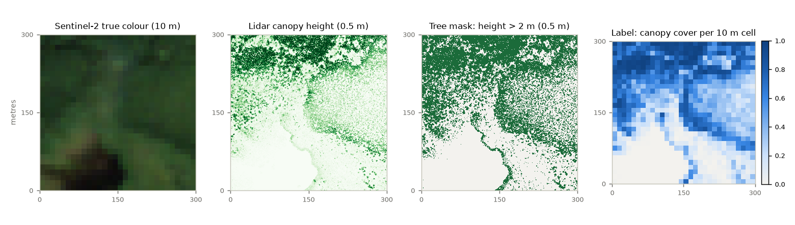

Ontario canopy cover from airborne lidar and Sentinel-2
Training labels for the forest-density model: canopy cover for every 10 m cell in 49 Ontario sites, measured from leaf-on lidar and placed exactly on the Sentinel-2 pixel grid, and a model trained on them that beats the current national and global canopy maps on held-out sites.
Headline: a U-Net trained on these labels predicts 10 m canopy cover from Sentinel-2 with a test error 28 % lower than Meta/WRI's 2026 global canopy map and about half that of Canada's SCANFI and NTEMS products, with the lowest error at 5 of 6 held-out sites. Jump to phase 2.
What was built
Each label says what fraction of a 10 m Sentinel-2 pixel is covered by tree crowns taller than 2 m. The lidar measures heights every 0.5 m, so every label is an average of 400 height measurements. Labels are continuous (0 to 1), so the cut points between dense, moderate, sparse and non-forest can still be chosen later without redoing any processing.

Ontario's Forest Resources Inventory lidar comes with a ready-made canopy height model: 0.5 m pixels, flown leaf-on, 2018–2025.
Pixels above 2 m count as tree crown, the standard "% of first returns above 2 m" convention. A 5 m version is stored too.
The mask is reprojected from NAD83(CSRS) to WGS84 UTM, the CRS Sentinel-2 uses, with a grid snapped to 60 m so the 10, 20 and 60 m bands all line up.
400 mask pixels become one cover value. Cells with any missing lidar are left empty rather than guessed.
Where the labels come from
The 49 sites are 5 km × 5 km blocks spread across Ontario's managed forest, from the Lake of the Woods area to the Ottawa Valley. Twelve were spread out evenly first. Five were added because they contain open and partly treed forest, which the first twelve barely had. Thirty-two more training sites were then added, each kept at least 0.5° from every validation and test site. Every site was flown in a single season between 1 June and 15 September.
Spatial split
Whole sites go to train, validation or test, never individual cells. Neighbouring cells look almost identical, so a random split would leak and overstate accuracy. The proposed split keeps the class mix similar in all three sets:
Class cut points (10 / 40 / 70 %) are placeholders until they are agreed with Korotu. Water cells are excluded here.
What the labels look like
A third-party map against the lidar
ESA WorldCover 2021 is one of the existing products the confidence map will combine. Lining its 10 m classes up against the lidar labels gives a first look at where it agrees and where it doesn't.
Training pairs
Every labelled cell has Sentinel-2 L2A surface reflectance: 12 bands, the 20 and 60 m bands repeated onto the 10 m grid. Each site has up to four cloud-free dates from the flight season (data/pairs/stacks/), and the first 17 sites also have a flat table of 4.13 million cells (data/pairs/pixels.parquet) for per-pixel models.
Scenes span four processing baselines. The newer ones carry a −0.1 reflectance offset that the AWS copies have already removed, and applying it again put forest red reflectance below zero. With that fixed, dense-forest red, NIR and SWIR agree within 0.003 across baselines.
As a first smoke test on the original 17 sites, gradient boosting on the bands plus NDVI, trained on 300k cells from 11 training sites, predicted cover on the held-out sites with these errors:
| Held-out sites | Cells | MAE | r | 4-class acc. | MAE if predicting the mean |
|---|---|---|---|---|---|
| Validation (3) | 733k | 0.161 | 0.84 | 67% | 0.364 |
| Test (3) | 726k | 0.123 | 0.87 | 71% | 0.343 |
These pairs carry real signal. The U-Net below cuts the validation error by about a third again. Accuracy uses the placeholder 10 / 40 / 70 % cut points.
Decisions and why
Limitations and open questions
- Ontario managed forest only. No far-north open woodland, no Hudson Bay Lowlands, little farmland edge. A Québec site (1 m height model, open data) would make a strong out-of-province test.
- Time gap. The preview scenes are a median of days from the flight (max ). The real S2 pipeline should keep the gap small, so harvest or fire between flight and image doesn't corrupt labels.
- Cover is not "forest". Shrubs and regrowth over 2 m count as canopy. Whether Korotu's "sparse forest" includes them is a question for Rebecca.
- Water. of cells are open water. Decide whether water is a separate class, part of non-forest, or masked out.
- For Korotu: the density cut points, the height threshold, and whether 10 m (Sentinel-2) or sub-metre imagery is the production target.
Literature summary
What existing work says about each step, and what this phase took from it.
Lidar as ground truth for canopy cover
- Canada's national forest structure products define cover as the share of first lidar returns above 2 m, e.g. the Forest Percentage Above 2m layer; lidar tools such as LAStools lascanopy compute it directly.→ our 2 m threshold and per-cell fraction.
- The height cutoff for "canopy" is a choice that depends on forest type: the US Forest Service lidar guide uses 1 m for short-stature stands and 3 m for mixed conifer (USFS lidar metrics, archived). Canada's NTEMS uses 2 m.→ a second 5 m band; 10 m cells (400 lidar pixels each).
- Ontario's provincial lidar is usually flown leaf-off, which gives better terrain models but undercounts deciduous canopy (2026 preprint citing Geospatial Ontario reports).→ the switch to FRI leaf-on lidar.
Learning cover from Sentinel-2 with lidar labels
- Lang et al. (2019) regressed canopy height from 13-band Sentinel-2 L2A with a CNN trained on airborne lidar references (arXiv 1904.13270), later scaled to a global 10 m map with GEDI.→ the S2 + lidar pairing is established.
- The California Forest Observatory trained U-Nets on Sentinel-1/2 at 10 m with structure metrics from USGS lidar, because lidar covered only a small fraction of the state (canopy cover product).→ closest precedent to our setup.
- Open-Canopy (CVPR 2025) pairs 87,000 km² of French LiDAR HD heights with 1.5 m SPOT imagery, with test tiles separated by a 1 km buffer (arXiv 2407.09392).→ spatially separated test data; a possible pretraining source.
- Google's AlphaEarth embeddings (64 numbers per 10 m pixel) beat earlier features for mapping from sparse labels (arXiv 2507.22291).→ a cheap baseline input for the model team.
Canadian reference data
- NTEMS annual 30 m forest land cover 1984–2022 (Hermosilla et al.) and SCANFI 2020 crown closure are models trained on lidar and photo plots.→ third-party maps to combine, not ground truth.
- Bater et al. (2026) released ~15M 30 m lidar plots along transects over northern forests, with cover metrics (ESSD 18:2075).→ a northern evaluation set if time allows.
- Québec publishes a 1 m lidar canopy height model as open data (Données Québec).→ out-of-province test region.
Existing maps disagree
- Global forest products differed by up to 70 % in forest area across three countries, and higher resolution did not mean higher accuracy (Gapare et al. 2026).→ trust in each product should vary by region.
- Dynamic World, WorldCover and Esri agree on tree area but each has class biases, e.g. WorldCover over-estimates grass (PNNL comparison).→ matches our WorldCover result for shrub and grass cells.
- Forest definitions differ: FAO uses >10 % cover over 0.5 ha, Canada's UNFCCC reporting uses >25 % over 1 ha (StatCan).→ part of the disagreement between products is definitional.
Combining maps and stating confidence
- IIASA fused eight forest products with geographically weighted regression trained on crowdsourced points; the hybrid reached 93 % accuracy, beating every input (Schepaschenko et al.).→ the template for the weighted confidence map.
- Bayesian fusion gives each pixel a class probability plus an uncertainty map (Xu et al. 2014, Remote Sensing 6:5589).
- Olofsson et al. (2014) set the standard for accuracy assessment: probability sampling and area-weighted error matrices (RSE 148).→ how the final map should be evaluated.
Every site
Each card shows the Sentinel-2 scene closest to the lidar flight next to the 10 m label for the same 4.9 km square. Rivers, roads and cutblocks line up in both, which is a visual check of the grid alignment.
Site table
Files and handoff
Everything is in ~/Projects/korotu-forest-density/ and reruns from the scripts in order. For the Sentinel-2 teammates: data/manifest/sites.geojson has each site's footprint, CRS (epsg_s2), grid bounds and lidar flight dates; s2_preview_scenes.csv lists one cloud-free scene per site as a starting point.
scripts/select_sites.py pick 12 spread-out 5×5 km sites, check flight dates
scripts/add_sparse_sites.py add 5 sites chosen for 10–70 % cover
scripts/expand_sites.py add 32 training sites, ≥ 0.5° from val/test
scripts/download_chm.py fetch CHM tiles (resumable, validated)
scripts/make_labels.py 10 m labels on the S2 grid → data/labels/<site>_cover10m.tif
band 1 cover_gt2m · band 2 cover_gt5m · band 3 valid_frac
scripts/context_layers.py S2 true-colour preview + ESA WorldCover per site
scripts/eda.py splits, statistics, figures
scripts/make_pairs.py S2 L2A 12-band stacks + pixels.parquet (first 17 sites)
scripts/make_stacks.py up to 4 cloud-free S2 dates per site, all 49 sites
scripts/benchmarks.py Meta CHM v2, SCANFI v2, NTEMS on the label grid
scripts/calibrate_benchmarks.py isotonic recalibration on training sites
scripts/train_unet.py U-Net training (≈5 min on an RTX 5070 Ti laptop GPU)
scripts/ensemble.py average seeds
scripts/evaluate.py scores at 10 m and 30 m
scripts/final_analysis.py per-site, imagery-age and confusion checks, figures
scripts/check_pairs.py reflectance harmonization + baseline smoke test
report/build_report.py builds this page
A canopy-cover model that beats the current maps
With the labels in place, phase 2 asked whether a model trained on them can beat the best existing canopy maps for Canada. A U-Net reading only Sentinel-2 does, on 5 of the 6 held-out sites and on the pooled test and validation sets, after about five minutes of training on a laptop GPU.
What was done
32 more training sites (49 in total, 1,219 km², 11.9M labelled cells), each at least 0.5° from every validation and test site so the evaluation stays independent.
Up to four cloud-free Sentinel-2 scenes from the flight season per site (161 training site-dates). Each date is a different view of the same forest, which works as augmentation, and predictions are averaged across dates.
ResNet-34 encoder with ImageNet weights adapted to 12 bands, L1 loss on random 128 × 128 crops, 8,000 steps. The final model averages three seeds plus four flips.
Meta and SCANFI are placed on the same 10 m grid, scored on the same cells, and also recalibrated to our lidar using training sites only. Choices were made on validation; test was scored once.
flowchart LR A["FRI leaf-on lidar
0.5 m heights"] --> B["10 m cover labels
on the S2 grid"] C["Sentinel-2 L2A
up to 4 dates per site"] --> D["U-Net × 3 seeds
43 training sites"] B --> D D --> E["Ensemble
dates + flips + seeds"] E --> F["Score on 6 held-out sites
10 m and 30 m"] G["Meta/WRI CHM v2
SCANFI v2, NTEMS 2022"] --> F E --> H["Ensemble spread
confidence preview"]
scripts/.Training
Results against the current maps
The comparison set is the maps that represent the current state of the art for Canadian canopy cover. Meta/WRI Global Canopy Height v2 (2026, ~1 m, from sub-metre satellite imagery) is turned into cover with exactly our definition, the share of each 10 m cell above 2 m. SCANFI v2 (2026) is Canada's 30 m National Forest Inventory crown-closure product, taken from the 5-yearly layer nearest each flight. NTEMS 2022 is Canada's 30 m lidar-plot-trained Landsat canopy cover (Matasci et al. 2018 method), which uses the same 2 m definition as ours. Each product also appears recalibrated: a monotone map fitted to our lidar on training sites only, so no product loses just because it defines cover differently.
Test sites (scored once)
Validation sites
MAE and RMSE are in cover fraction (0.10 = 10 percentage points). 30 m = 3 × 3 blocks of 10 m cells. Accuracy and macro-F1 use the placeholder 10 / 40 / 70 % classes. Best value per column in bold.
Where the model still gets classes wrong
Test-site confusion, rows = lidar class, share of each row:
Site by site
How fair is the comparison
Maps on the held-out sites
Toward the confidence map
The three seeds disagree more where the model is wrong. Their spread can be computed anywhere without lidar, so it is a ready-made first signal for the per-pixel confidence the project needs. It is not yet calibrated: a spread value is not a probability.

Next steps
- Québec test. Québec's open 1 m lidar gives an out-of-province check before claiming more than Ontario.
- Sparse forest. The 10–40 % class is the weak spot: add sites chosen for it, or weight the loss by class.
- Confidence map. Calibrate the ensemble spread on validation sites, then combine it with agreement between our model, Meta and SCANFI for the weighted confidence map.
- Charter and Korotu. Update Section 3 to the FRI lidar, and confirm the class cut points and height threshold with Rebecca.
Checking the work
Everything above was produced by code, and code can be wrong. This part re-derives each main claim by a separate route, using different libraries and methods from the pipeline's, and lists what the checks turned up, including the bugs they caught.
Code: REPO_SHORT. Every check is one script in verify/; python -I verify/run_all.py reruns all of them and prints pass or fail. Numbers on this page are read from the scripts' output files when the page is built, not typed in.
Each claim and how it was checked
What the checks found
Every training run
Every model trained for this project, including the discarded ones. One set of settings was used for every full run and never changed. Each run prints a test score at the end, but no setting was changed after one; the only earlier run is a 60-step smoke test that checked the pipeline ran.
What these checks don't prove
- Home advantage. The checks show the labels and scores are computed correctly. They can't show the model generalizes beyond Ontario, or beyond leaf-on lidar's notion of cover. That needs the Québec test.
- Six held-out sites. The test set is honest, but small. Site-to-site spread (model MAE from about 0.05 to 0.17) is larger than the gap between some products, so per-site rankings are noisy.
- The checks were written by the same author as the pipeline. They take different code paths, but a human reading the code is still the strongest check. The code map below is the place to start.
- Literature. Every link on this page was opened by script. Two were dead and were replaced. One claim did not match its source and was rewritten (see above). Papers were checked against their abstracts and catalogue records, not read in full.